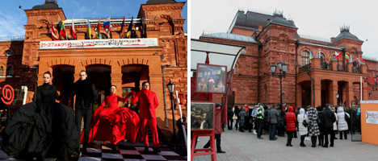
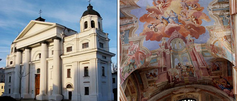
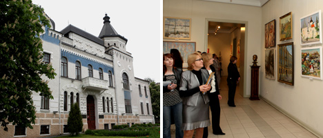

MOGILEV

Dominique: La ciudad se estableció en la orilla del río Dnieper hace más de siete siglos. Si miras el mapa de Bielorrusia, no te sorprenderá por qué Mogilev ha sido utilizado como ubicación estratégica muchas veces a lo largo de su historia. Durante la Primera Guerra Mundial, el cuartel general del ejército ruso y la residencia del emperador Nicolás II se ubicaron allí. Antes de la Segunda Guerra Mundial, había planes para reubicar la capital de Bielorrusia en Mogilev, porque Minsk estaba demasiado cerca de la frontera occidental del país. Un testimonio de eso fue la construcción apresurada de la Casa de los Soviets en Mogilev. El edificio era casi la réplica exacta de la Casa de Gobierno con sede en Minsk. Durante la Gran Guerra Patria, Mogilev resistió contra el enemigo durante 23 días, incluidos 16 días en un cerco completo.
El edificio original del Teatro de Drama Mogilev fue el primero en Bielorrusia que se construyó específicamente para una compañía de teatro. Antes de eso, se representaban actuaciones en los palacios de terratenientes ricos y en pabellones de teatros itinerantes. En la década de 1810, los residentes locales soñaban con un teatro permanente, pero su sueño se hizo realidad varias décadas después. El teatro fue diseñado por el arquitecto Piotr Kamburov. Fue construido de ladrillo rojo en el estilo pseudo-ruso en el lugar de un castillo del siglo XVII. El teatro fue inaugurado solemnemente el 25 de septiembre de 1888. Se jactó de uno de los mejores escenarios de Europa en términos de sonido. Entre los artistas célebres que actuaron en el teatro se encontraban el cantante de ópera Fyodor Shalyapin, el virtuoso Sergei Rakhmaninov y la actriz Vera Komissarzhevskaya. Fue allí donde el emperador Nicolás II vio el noticiero en tiempo de guerra y revisó las tropas durante la Primera Guerra Mundial desde el balcón.
La principal catedral ortodoxa del este de Mogilev, un espécimen arquitectónico de principios del siglo XX, lleva el nombre de Basilio el Grande, Gregorio el teólogo y Juan Crisóstomo. La catedral de siete cúpulas fue construida en forma de cruz al estilo pseudo-ruso. Tiene una característica muy notable: se puede ingresar desde tres lados. Durante la Primera Guerra Mundial, la catedral fue frecuentada por el emperador Nicolás II. El halidom principal de la iglesia es la réplica del icono de la Madre de Dios que hace maravillas de Mogilev y Bratsk. La iglesia también tiene el ícono de San Nicolás con piezas de reliquias, las réplicas de los íconos de la Madre de Dios de Belynichi y Barkolabovo, y la imagen de San Eufrosina de Polotsk que data de 1910.
Una hermosa iglesia católica romana de estilo barroco de la Asunción de la Santísima Virgen María fue construida en Mogilev en el sitio del monasterio carmelita. Una leyenda dice que fue construido con ladrillos de horno que fueron traídos por la gente del pueblo para expiar el pecado del asesinato de un noble local. Después de visitar el templo en 1780, la emperatriz Catalina II ordenó desalojar a los monjes y convertir la iglesia en una catedral. A finales del siglo XVIII fue reconstruido en estilo clasicismo y recibió un segundo nombre en honor a San Estanislao. Las cúpulas de la catedral están decoradas con frescos únicos y auténticos del siglo XVIII para las historias bíblicas que representan uno de los ciclos evangélicos más completos y profesionales de Bielorrusia.
El monasterio de San Nicolás es uno de los pocos edificios sobrevivientes en el estilo barroco bielorruso. El monasterio, que forma parte de la lista tentativa del Patrimonio Mundial de la UNESCO, incluye la Catedral de San Nicolás (entre los edificios barrocos más valiosos de Europa), el Templo de San Onufrio el Grande, un campanario y viviendas. El orgullo de la Iglesia de San Nicolás es un hermoso iconostasio de cuatro niveles realizado por hábiles talladores de Mogilev en el siglo XVII, entre los cuales se encontraba Klim Mikhailov, nativo de Shklov. Es famoso por su trabajo en el Palacio del Zar en Kolomenskoye y en las cámaras del Kremlin. Un iconostasio similar se puede ver solo en la Catedral de Smolensk del Convento Novodevichy en Moscú.
El Museo de Arte Regional de Mogilev que lleva el nombre de Pavel Maslenikov no solo es un guardián de las obras maestras de los siglos XVII-XIX, sino también un gran espécimen arquitectónico. El edificio del banco de tierras de los agricultores que una vez albergó museos y oficinas de periódicos se construyó en 1903-1914. El proyecto combina armoniosamente el estilo moderno, neo-ruso y el clasicismo tardío. El principal punto de interés en el edificio era una habitación fuerte blindada que guardaba objetos de valor únicos, muchos de los cuales desaparecieron sin dejar rastro durante la Gran Guerra Patria: la Cruz de Eufrosina de Polotsk (el museo exhibe un holograma de la reliquia), la Pompeya oro, bandeja de Alejandro de Macedonia, pinturas de artistas europeos, libros y documentos escritos a mano, monedas e íconos de los siglos XVII-XIX ...
The memorial commemorates the soldiers who defended the city against the Nazis for 23 days in July 1941. The heroism of the soldiers is one of the brightest pages of the Great Patriotic War. Mogilev is often called "the Father of Stalingrad". The memorial has a red chapel featuring memorial tablets with the names of the killed defenders. There is also the Foucault pendulum, a symbol of imperishable memory, at the memorial. Four alleys radiate from the chapel, with one dedicated to the first chronicler of the Mogilev defense, author of the Alive and the Dead novel Konstantin Simonov. Nearby is an open-air exposition of military hardware.